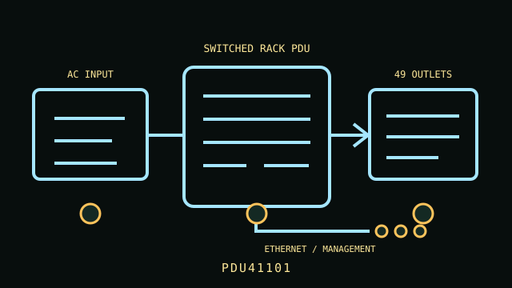

[ NETWORKED / SWITCHED RACK PDU // EXACT SKU ]
CyberPower PDU41101 Switched PDU
120 V single-phase, L5-20P 20 A input (16 A continuous); 24 switched NEMA 5-20R outlets; 0U. This static record covers the named model only; confirm complete regional suffix, revision and nameplate before installation.

ARCHIVAL IDENTIFICATION: PDU41101. Record the complete label, serial/date code, firmware and condition; similarly named models are not electrically interchangeable.
Exact model specifications
| SKU / topology | PDU41101 — networked switched rack power distribution unit; no UPS battery or stored runtime. |
|---|---|
| Input and output voltage | 100–120 V AC input and output |
| Phase / ampacity | Single phase; 20 A input, 16 A maximum continuous load (UL derated) |
| Outlet count and type | 24 × NEMA 5-20R receptacles; remotely/local switched outlet banks |
| Metering / outlet switching | Digital LCD load display and remote/local outlet switching, cycling and scheduling; bank-level overcurrent protection. |
| Network management | RJ45 Ethernet network port supports browser-based management and SNMP; remote notifications and controls depend on network/firmware configuration. |
| Rack dimensions | 0U vertical rack-mount format; approximately 65.55 × 2.2 × 1.88 in (H×W×D) per published product data; confirm rail/side-channel clearance. |
| Plug and load compatibility | NEMA L5-20P input (single-phase 120 V twist-lock) requires a matching grounded L5-20R circuit. NEMA 5-20R outputs accept 5-15P/5-20P loads; do not exceed the PDU or branch ampacity. |
| Electrical safety | Use only on a grounded 120 V circuit; the 20 A input is limited to 16 A continuous. Confirm breaker, connector and outlet-bank ratings on the unit label. Install securely in a rack, keep ventilation unobstructed and never service energized equipment. |
Service and safe deployment
- Verify voltage, phase, inlet plug, circuit ampacity, continuous load and per-outlet ratings against the PDU nameplate and the exact product manual.
- Use grounded, correctly protected service; never defeat the protective-earth conductor, overload an outlet/bank, or daisy-chain power strips/PDUs.
- Mount the chassis using the manufacturer-approved brackets and preserve ventilation and strain relief. Inspect cord, plugs, receptacles and enclosure for heat, wear or damage.
- Disconnect upstream power before installation, relocation or service. Do not open energized mains equipment; use a qualified electrician where required.
- Network management can switch power to connected systems; isolate management access, set unique credentials and verify firmware before deployment.
Manufacturer sources and manual
- Manufacturer product page — CyberPower PDU41101 Switched PDUManufacturer model listing and configuration details; match the complete SKU and region.
- Manufacturer documentation — PDU41101/41102/41104/41005 Series product documentationManufacturer manual, technical data or specifications; use the revision applicable to the unit label and follow its installation and safety directions.